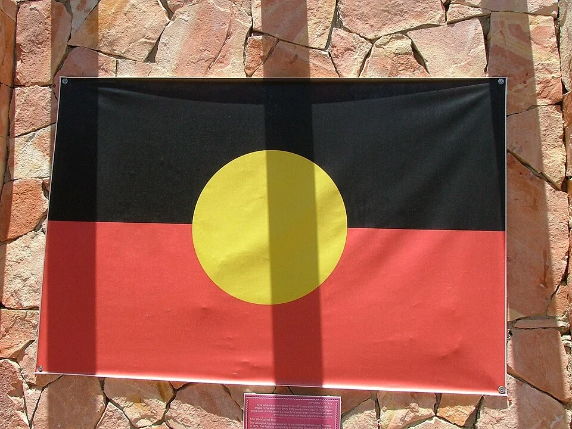
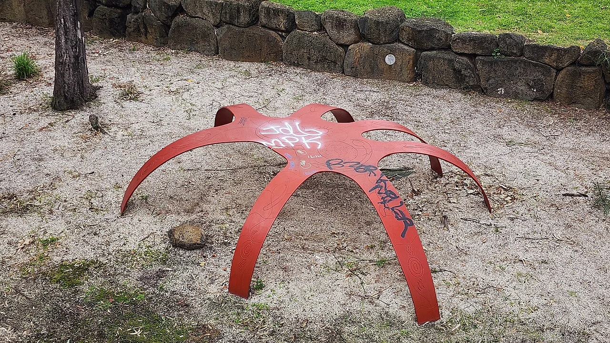
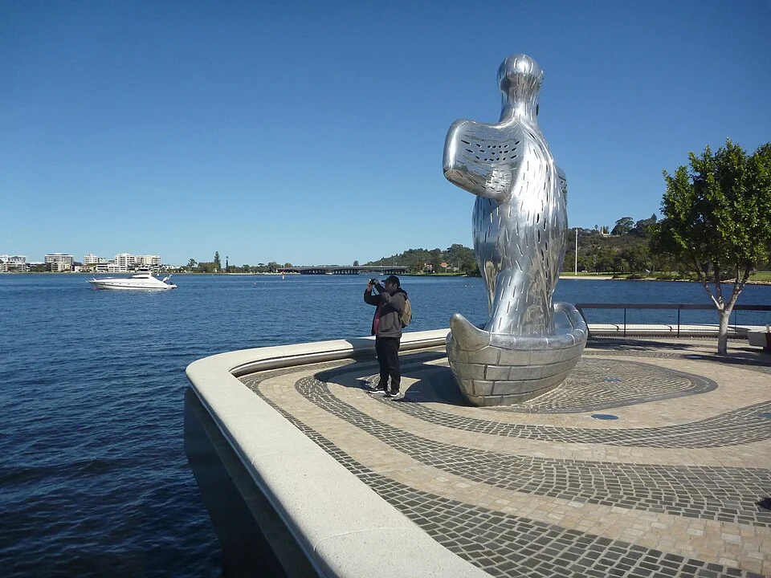
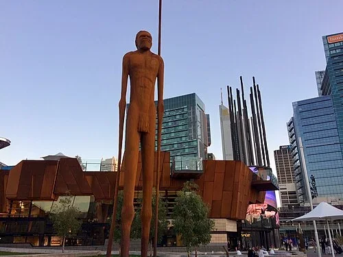

見どころ
上半分の黒はアボリジナルの人々、下半分の赤は大地と儀礼に使う赤土、中央の黄色い円は太陽。1971年、アデレードの土地権を求める集会で掲げられました。
本文・作品図録公開（実作品画像4点） · 2026-11-22
地域・制作主体別の案内（単一の様式・運動ではない）
Australian Indigenous contemporary design
オーストラリアには、先住民の人々がつくる服や家具、アクセサリーがあります。
土地や暮らしに伝わる話を、いまの物づくりへつなぐ人たちがいます。
このページでは、いくつかの作品を見ていきます。
同じ国に住んでいても、文化やつくり手はさまざまです。
一つの模様を、すべての人々に共通する印とは考えません。
実作品を見る

画像を表示できませんでした。下の出典ページで確認できます。
ハロルド・トーマス（ルリジャ） / 1970年デザイン、1971年初掲揚
上半分の黒はアボリジナルの人々、下半分の赤は大地と儀礼に使う赤土、中央の黄色い円は太陽。1971年、アデレードの土地権を求める集会で掲げられました。
旗のデザイン：Harold Thomas、権利者：Commonwealth of Australia。撮影：SuperJew / Wikimedia Commons / CC BY-SA 3.0（WebP変換）
出典で作品・資料を見る ↗CC BY-SA 3.0
旗の権利者はオーストラリア連邦。
旗・ペナント類の製造とは別に、ウェブを含む他媒体の複製を認めている。
https://www.pmc.gov.au/resources/australian-flags-booklet/part-3-other-official-flags-australia/flags-australias-indigenous-peoples
出典先の原画像を開く ↗作品の所蔵・権利情報 ↗画像の利用条件 ↗図版全体を保ち、表示用のWebP画像を作成。
実作品を見る

画像を表示できませんでした。下の出典ページで確認できます。
フィオナ・クラーク（キラエ・ウルロン）、ケン・マッキーン / 2003年
メルボルンの川辺で使われたウナギのわなを、赤い鋼板の彫刻に移しました。かつてこの近くで食料を得ていた人々の知恵を、同じ土地に戻した作品です。
Shkuru Afshar / Wikimedia Commons / CC BY-SA 4.0（WebP変換）
出典で作品・資料を見る ↗CC BY-SA 4.0
オーストラリア著作権法第65条。公共の場所に常設された彫刻の写真。
出典先の原画像を開く ↗作品の所蔵・権利情報 ↗画像の利用条件 ↗図版全体を保ち、表示用のWebP画像を作成。
実作品を見る

画像を表示できませんでした。下の出典ページで確認できます。
ローレル・ナナップ（ヌンガー）／UAP、FORMと共同制作 / 2016年
遠くの海に現れた帆船を、巨大な鳥と見たヌンガーの人々の記憶を造形しました。頭をひねり翼を広げる鳥に、帆とマストの形が重なります。
Sam Wilson / Wikimedia Commons / CC BY-SA 4.0（WebP変換）
出典で作品・資料を見る ↗CC BY-SA 4.0
オーストラリア著作権法第65条。公共の場所に常設された彫刻の写真。
出典先の原画像を開く ↗作品の所蔵・権利情報 ↗画像の利用条件 ↗図版全体を保ち、表示用のWebP画像を作成。
実作品を見る

画像を表示できませんでした。下の出典ページで確認できます。
チルンゴー（ランス・チャッド）／Big Spoon Art Servicesとの共同制作 / 2018年
広場に立つ長身の像は、槍と槍投げ器を手にしています。題名はヌンガーの言葉で「精霊」。作者の水彩画をもとに、人と土地の結びつきを街の目印にしました。
The Logical Positivist / Wikimedia Commons / CC BY-SA 4.0（WebP変換）
出典で作品・資料を見る ↗CC BY-SA 4.0
オーストラリア著作権法第65条。公共の場所に常設された彫刻の写真。
出典先の原画像を開く ↗作品の所蔵・権利情報 ↗画像の利用条件 ↗図版全体を保ち、表示用のWebP画像を作成。
作品の知名度や画像の入手しやすさだけで選びません。紹介したい作品と、調べて分かったことをまとめました。画像を載せられるかどうかは、別に確かめています。画像の利用許諾を確認できていないものは掲載していません。
旗や公共空間の彫刻を通じて、異なる先住民族の作家が土地との関係や歴史をどう伝えたかを見比べます。
原題：Gifting of Country dress and scarf
絵をかいた人と、服を考える人が協力しました。
誰が絵をかき、誰が服にしたのか、二人の仕事を分けて見ます。
衣服・テキスタイル
絵画を衣服へ作り変えるとき、作者とデザイナーがどう協力するかを見ます。WiradjuriのFranciscoとGijaのMalayは、それぞれの背景と役割を分けて考えます。
NGV2022.808.a-b。材料は絹とエラスタンです。制作年と、コレクションに示されたシーズンを区別します。
原題：Ngumu Janka Warnti (All made from rubbish), high-back chair
アルミニウムの網と、馬に乗る道具に使う革からつくられました。
つくり手たちは、長い時間をかけて話し合い、形を考えました。
家具
捨てられたアルミニウムの網と、鞍（くら）用の革を使った構造を見ます。長い期間の対話を通して、一緒に設計した過程にも注目します。
NGV2021.217。artist’s proof（作家のために確保された版）で、146.8×58.5×60cmです。共同制作者の背景と製作での役割は、引き続き一人ずつ確認します。
原題：Gepi cabinet
魚のうろこのような竹の部品を使う家具です。
Merという土地の魚や海との関わりを、複数の人が一緒に表しました。
家具・共同制作
竹の鱗（うろこ）のような部材と、Merの魚や海との関係を結ぶ共同制作です。ある地域の物語を、First Nationsすべてに共通する飾りとは考えません。
2019年にNGVが制作を依頼しました。材料は竹、ポプラの合板、合成樹脂絵具です。寸法と収蔵番号は未確認です。Marep Pamleの全18名と、この家具の6名の作者を混同しません。
旗・グラフィックデザイン
上半分の黒はアボリジナルの人々、下半分の赤は大地と儀礼に使う赤土、中央の黄色い円は太陽。1971年、アデレードの土地権を求める集会で掲げられました。
作品・資料の出典を見る ↗原題：Australian Aboriginal Flag
ハロルド・トーマス（ルリジャ） / 1970年デザイン、1971年初掲揚 / 旗・グラフィックデザイン
公共空間のデザイン・鋼板の彫刻
メルボルンの川辺で使われたウナギのわなを、赤い鋼板の彫刻に移しました。かつてこの近くで食料を得ていた人々の知恵を、同じ土地に戻した作品です。
作品・資料の出典を見る ↗原題：Eel Trap
フィオナ・クラーク（キラエ・ウルロン）、ケン・マッキーン / 2003年 / 公共空間のデザイン・鋼板の彫刻
公共空間のデザイン・アルミ鋳造彫刻
遠くの海に現れた帆船を、巨大な鳥と見たヌンガーの人々の記憶を造形しました。頭をひねり翼を広げる鳥に、帆とマストの形が重なります。
作品・資料の出典を見る ↗原題：First Contact
ローレル・ナナップ（ヌンガー）／UAP、FORMと共同制作 / 2016年 / 公共空間のデザイン・アルミ鋳造彫刻
公共空間のデザイン・鋳鉄と鋼の彫刻
広場に立つ長身の像は、槍と槍投げ器を手にしています。題名はヌンガーの言葉で「精霊」。作者の水彩画をもとに、人と土地の結びつきを街の目印にしました。
作品・資料の出典を見る ↗原題：Wirin
チルンゴー（ランス・チャッド）／Big Spoon Art Servicesとの共同制作 / 2018年 / 公共空間のデザイン・鋳鉄と鋼の彫刻
オーストラリアの先住民の人々は、いま、衣服や家具、ジュエリー、空間でどんな表現をしているのでしょうか。この項目は、異なる地域の集団や作者の制作を知る入口です。共通の色や模様で一つの様式にまとめるものではありません。誰の知識・土地・物語を、誰が協力し、誰の許可を得て伝えているかに注目します。
ヴィクトリア国立美術館（NGV）は、先住民を指すFirst Nationsの現代の制作を、さまざまな地域や表現方法に広がる活動として紹介しています。Ngaliの衣服では、服のデザイナーと、もとになった絵画の作者を分けて記録します。椅子では、異なる背景を持つ共同制作者の役割を確かめます。Merの竹家具では、地域の人々が集団として合意したことにも注意します。
以下は観察のための問いです。すべての作品に共通する固定ルールや、未取得画像の実見結果ではありません。
全体に共通する「先住民らしい色」を決めないことが大切です。それぞれの作品の材料や色を見て、作者の説明と照らし合わせます。
文字の形だけで、どの民族の表現かを判断しません。集団の名称、言語、作者名、協力した人の名前を正確に読みましょう。
点を並べる描き方や、丸・四角などの模様を、すべての文化に共通する記号と考えないようにします。竹、革、印刷した布など、作品ごとに材料と作り方を確かめます。
衣服では、絵画をどのように布のデザインへ移したかを見ます。家具では、材料と組立て方、共同制作の関係に注目します。気に入った模様だけを集める見方では、その背景を取りこぼしてしまいます。
COMPARE
バウハウス（Bauhaus）のような一つの学校や、デ・ステイル（De Stijl）のような運動とは、まとめ方が違います。作品どうしを比べることはできます。ただし、異なる集団を一つの様式と見なして、優劣や発展の順番を付けることはしません。
項目を横に並べる ↗READ TODAY
ここで取り上げるのは、いま行われている制作そのものです。文化を過去の伝統だけに閉じ込めず、共同制作者の役割を確かめます。Country（土地と、人々の文化や暮らしとの深い結び付き）との関係も重要です。商品を一緒に作る場合は、誰の仕事や知識なのかという表示にも注目します。画像の著作権に加え、文化の知識をどう扱うかにも配慮が必要です。このサイトでは、模様を許可なく自作の説明図に取り込みません。
このページを書くときに使った資料です。作品の説明、画像を入手できたかどうか、画像を使う条件は、それぞれ別に確かめています。検索結果で読んだ情報と、元のページを開いて確かめた情報も、調査の記録で分けています。
この項目の実作品画像は4点、参照・関連画像は0点です。画像の収集は続けています。